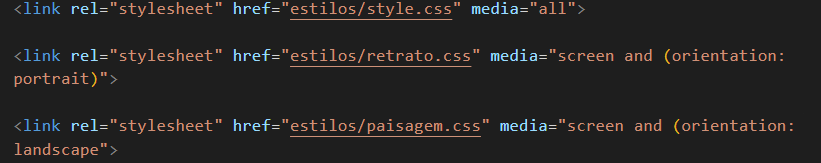

Aprendendo Media Queries
-
Para realizarmos uma Media Queries, que são basicamente as configurações diferentes de um site e de uma versão impressa. Neste caso criamos 2 estilos de CSS um para parte visual do site, o que já fazamos normalmente e outro para parte de impressão.
-
No Exemplo desse site, podemos verificar que quando simulamos uma impressão o formato está diferente a visualização do site, isso porque criamos estilos diferentes, segue abaixo o exemplo que criamos para tela e para versão impressa.
-
Para telas usamos o
media="screen"e para impressão usamos omedia="print"dentro do estilo CSS.
Múltiplas Media Queries
- No exemplo abaixo, estamos definindo 3 media queries, uma com all, que significa todas as configurações gerais, outra utilizando o portrait (retrato, quando o celular ou dispositivo está em pé)e o landscape (paisagem, quando o celular ou dispositivo está deitado)
- No caso de utilizarmos o modo portrait (retrato) e landscape (paisagem) a configuração precisa ser informada entre parênteses e com a informação conforme exemplo abaixo:
- link rel="stylesheet" href="estilos/retrato.css" media="screen and (orientation: portrait)">
link rel="stylesheet" href="estilos/paisagem.css" media="screen and (orientation: landscape">
